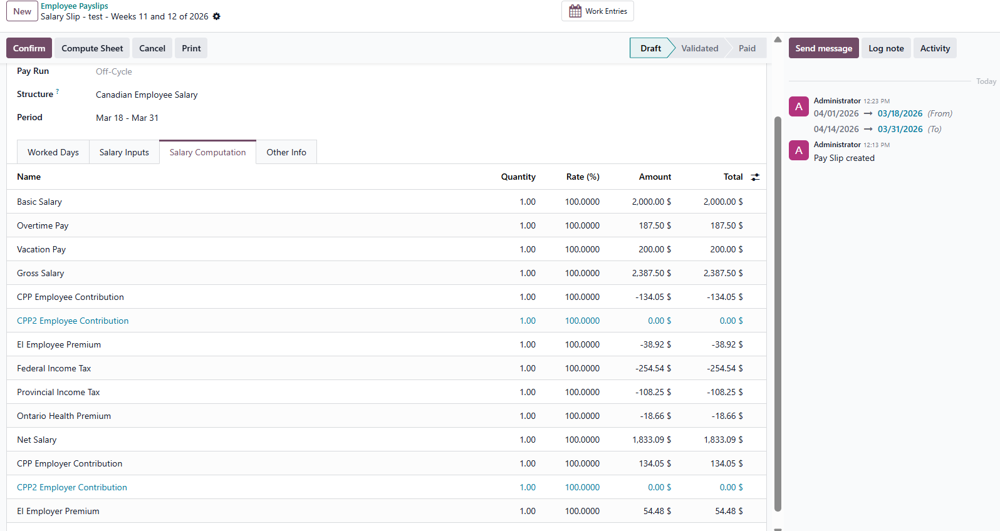
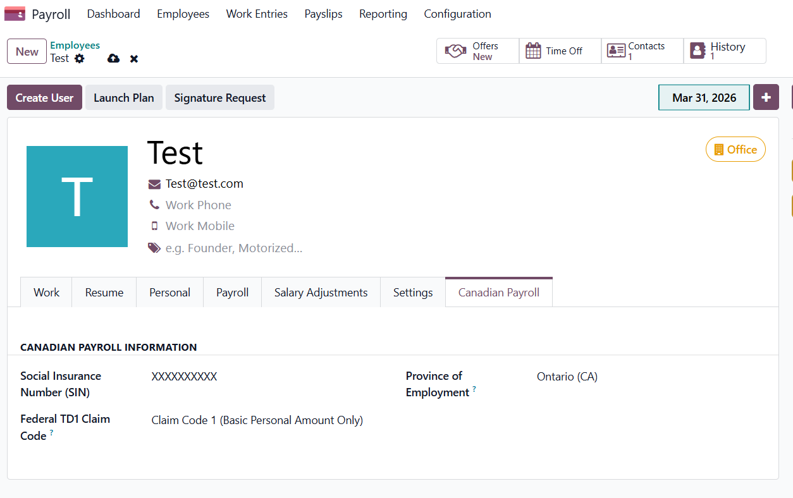
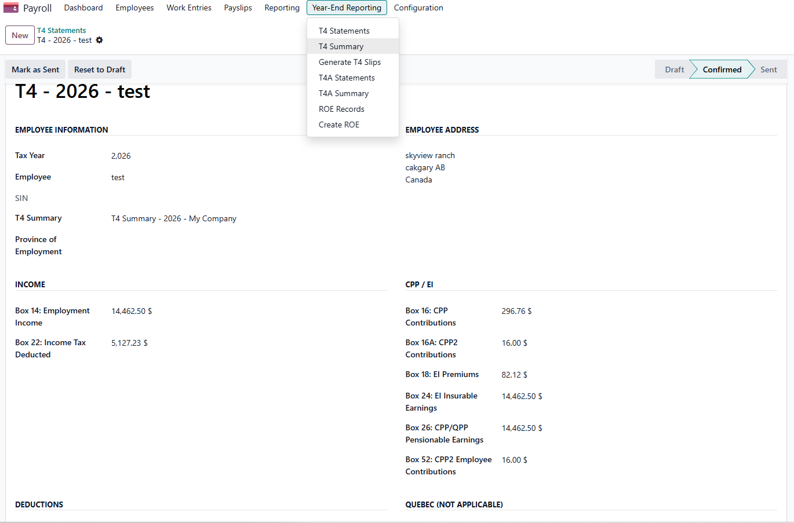

Canada – Payroll
Complete Canadian Payroll for Odoo 18 & 19 Enterprise
CPP/CPP2, EI Premiums, Federal & Provincial Income Tax, All Provinces & Territories Except Quebec
Overview
The Canada – Payroll module by MapleHorn Consulting Inc. brings
full Canadian payroll compliance to Odoo 18 & 19 Enterprise. Automatically calculate CPP/CPP2,
EI premiums, and federal and provincial income taxes for all Canadian provinces and
territories (except Quebec) — directly inside Odoo.
Built for Canadian businesses, this module integrates seamlessly with Odoo's HR Payroll,
Leaves Management, and Contracts, giving your payroll team a single, reliable platform for
Canadian compliance.

Employee payslip showing CPP, EI, and federal/provincial tax breakdown
CRA Accuracy & Compliance
Canadian source-deduction rules are deceptively complex — especially around annual contribution
maximums. This module implements true year-to-date (YTD) aware calculation logic
so high earners, mid-year hires, bonus periods, and variable-pay employees all withhold exactly
what CRA expects.
✅ YTD-Aware Annual Caps
- CPP, CPP2, and EI deductions are capped against the true annual maximum,
not a per-period
annual_max ÷ periods approximation.
- High earners hit the cap correctly mid-year and stop contributing for the rest
of the calendar year — exactly per CRA T4127.
- Mid-year hires and rehires are handled correctly (no naive smearing across "remaining" weeks).
- Prior-system YTD seeding is supported for migrations from other payroll systems.
✅ YTD-Aware K2 / K2P Tax Credits
- Federal (K2) and provincial (K2P) non-refundable credits for CPP/CPP2/EI use the
projected full-year contribution capped at the annual maximum.
- Once an employee's CPP/CPP2/EI hits the annual cap mid-year, the K2/K2P credit
keeps using the full annual amount — preventing the over-withholding that affects
naive payroll engines for the remainder of the year.
- Implements CRA T4127 §5.6 correctly for both regular and high-earner cases.
✅ Correct Journal Posting Direction
- Employee deductions (CPP, CPP2, EI, Fed Tax, Prov Tax, OHP, RRSP, Union Dues) post
as credits to liability accounts, never inverted.
- Net Pay Clearing (2380) reconciles to the cash disbursement account exactly.
- Liability accounts (2310 / 2320 / 2321 / 2330 / 2340) accumulate clean credit balances
ready for PD7A and provincial remittance.
Key Features
👤 Employee Details
- Social Insurance Number (SIN) field on the employee record
- Province of Employment selection
- TD1 Federal and Provincial Claim Code configuration
📋 Hourly & Salaried Structure Types
Two pay structure types are included out of the box — simply assign the right one when creating a contract:
- Canadian Employee — Hourly: contracts that pay by attendance hours × hourly wage
- Canadian Employee — Salaried: contracts that pay a fixed wage per period
Both types carry the full rule set (CPP/CPP2, EI, Federal Tax, Provincial Tax, OHP, etc.) and support all pay schedules.
💰 CPP & CPP2 Contributions
- Accurate employee and employer CPP contribution calculations
- CPP2 (enhanced second additional contribution) support
- True annual cumulative cap — high earners hit the maximum mid-year and correctly stop contributing
- Updated annually with CRA-published rates and maximums
📋 EI Premiums
- Employee Employment Insurance (EI) premium deductions
- Employer EI premium contributions (1.4× employee rate)
- Both per-period MIE insurable cap and YTD-aware annual premium maximum enforced
🇨🇦 Federal Income Tax
- All 5 federal tax brackets with current CRA rates
- Basic Personal Amount (BPA) phase-out — configurable per contract (default OFF to match CRA PDOC, Wave, QuickBooks, ADP, and Ceridian)
- K2 non-refundable credit for CPP/CPP2/EI computed on projected annual contribution (cap-aware)
- TD1 claim codes applied to reduce source deductions
- Additional voluntary tax deduction supported
🏠 Provincial & Territorial Income Tax
- All Canadian provinces and territories supported (except Quebec)
- Dynamic province detection from the employee record
- K2P provincial CPP/CPP2/EI credit — also YTD-aware and cap-respecting
- Ontario surtax calculation
- Ontario Health Premium (OHP) deduction
- Provincial TD1 claim codes respected
📊 Pre-Tax Deductions & Allowances
- RRSP contributions (reduces taxable income)
- Union dues deduction
- Configurable allowances and other deductions
- Flexible Basic / Gross / Net Salary configuration
📄 Payslip & Odoo Integration
- Detailed Canadian payslip report (PDF)
- Employee Contracts support
- Integrated with Odoo Leaves Management (vacation, sick leave, etc.)
- Works with Odoo's standard payroll workflow (draft → confirm → pay)
- Posts a balanced, CRA-correct accounting entry to the SAL journal on payslip confirmation

Employee configuration: SIN, Province of Employment, and TD1 Claim Codes
Provinces & Territories Supported
- Alberta (AB)
- British Columbia (BC)
- Manitoba (MB)
- New Brunswick (NB)
- Newfoundland & Labrador (NL)
- Nova Scotia (NS)
- Ontario (ON)
- Prince Edward Island (PE)
- Saskatchewan (SK)
- Northwest Territories (NT)
- Nunavut (NU)
- Yukon (YT)
* Quebec has its own provincial payroll system (QPP/QPIP) and is not included in this module.
Year-End Reporting: T4 & T4A
📄 T4 Statement of Remuneration Paid
- Auto-generated T4 slips from confirmed payslips
- Box 14 (Employment Income), Box 22 (Income Tax Deducted)
- Box 16 (CPP), Box 16A (CPP2), Box 18 (EI Premiums)
- Box 24 (EI Insurable Earnings), Box 26 (CPP/QPP Pensionable Earnings)
- Box 52 (CPP2 Employee Contributions)
- Draft → Confirmed → Sent workflow with status tracking
📊 T4 Summary with CRA XML Export
- Annual T4 Summary aggregating all employee T4 slips
- CRA-compliant XML export for electronic filing
- Automatic totals for employer and employee contributions
📋 T4A Statement of Pension, Retirement, Annuity & Other Income
- Manual entry for pension, annuity, and other income payments
- Supports all standard T4A boxes
- Draft → Confirmed → Sent workflow
📊 T4A Summary with CRA XML Export
- Annual T4A Summary with automatic totals
- CRA-compliant XML export for electronic filing
📄 Record of Employment (ROE)
- Generate ROE records directly from the payroll menu
- XML export for Service Canada electronic filing

T4 slip with auto-computed boxes and Year-End Reporting menu (T4, T4A, ROE)
Optional Companion: CRA Tax Data Connector
A free companion module — l10n_ca_hr_payroll_cra_connector — fetches the
latest CRA-published rates (CPP, CPP2, EI, federal & provincial brackets, BPAs) from
a signed JSON feed and proposes an annual update for human review and approval inside Odoo.
No silent rate changes — every update is logged, checksum-verified, and gated by the
Payroll Manager group.
Requirements
- Odoo 18 & 19 Enterprise
- Odoo HR Payroll (
hr_payroll)
- Odoo Work Entry Holidays (
hr_work_entry_holidays)
- Odoo Payroll Holidays (
hr_payroll_holidays)
About MapleHorn Consulting Inc.
MapleHorn Consulting Inc. specializes in Odoo implementations and customizations for Canadian
businesses. We are committed to delivering high-quality, standards-compliant Odoo modules that
make running a business in Canada easier.
🌐
www.maplehornconsulting.com